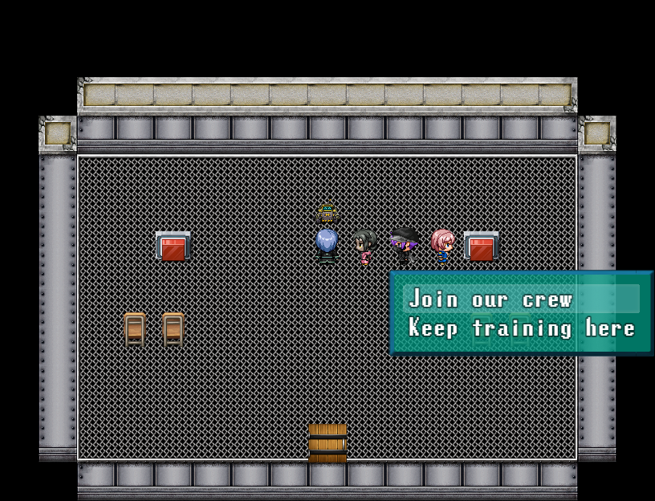
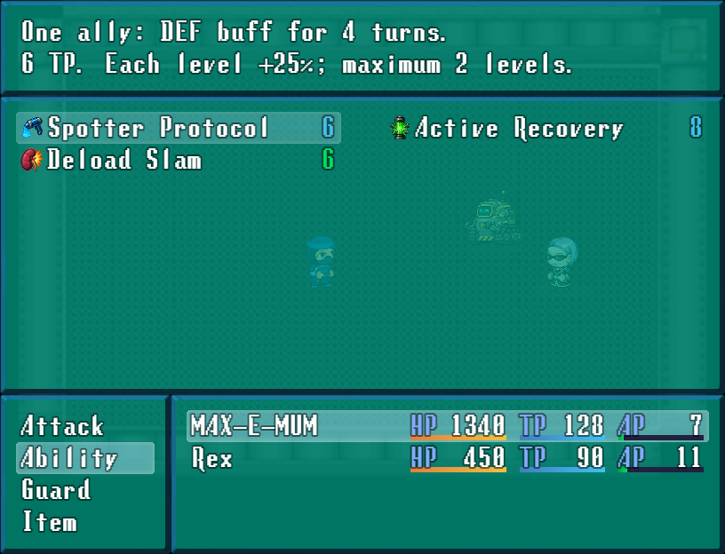
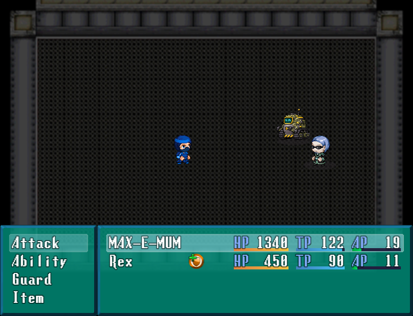
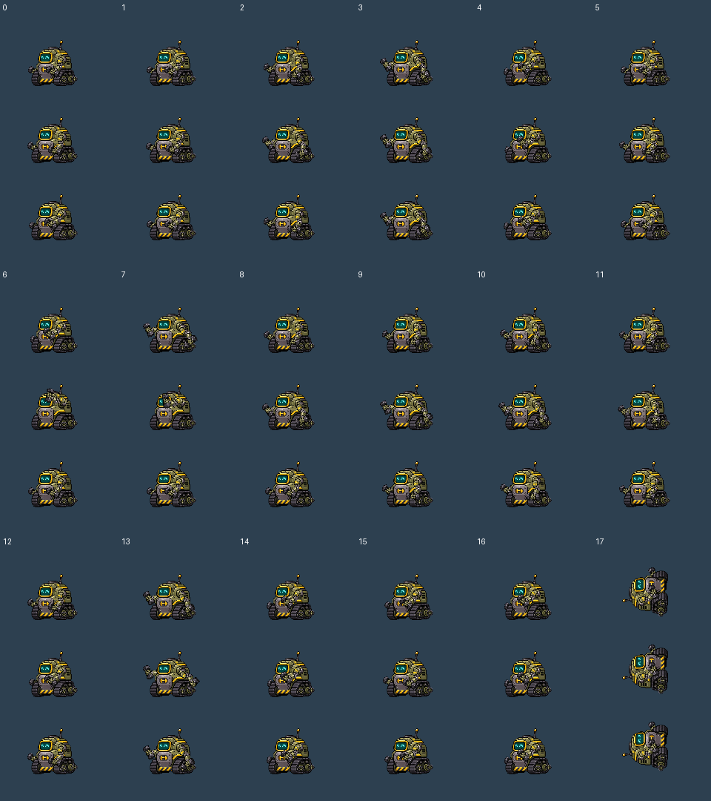
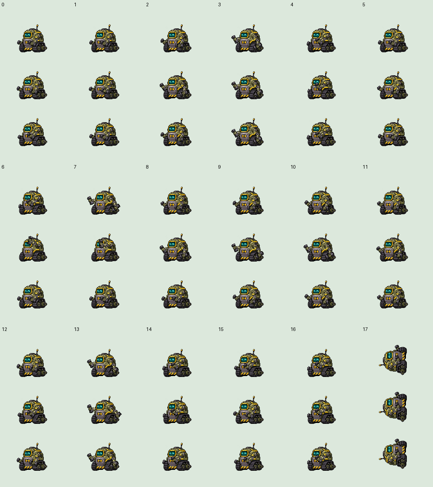
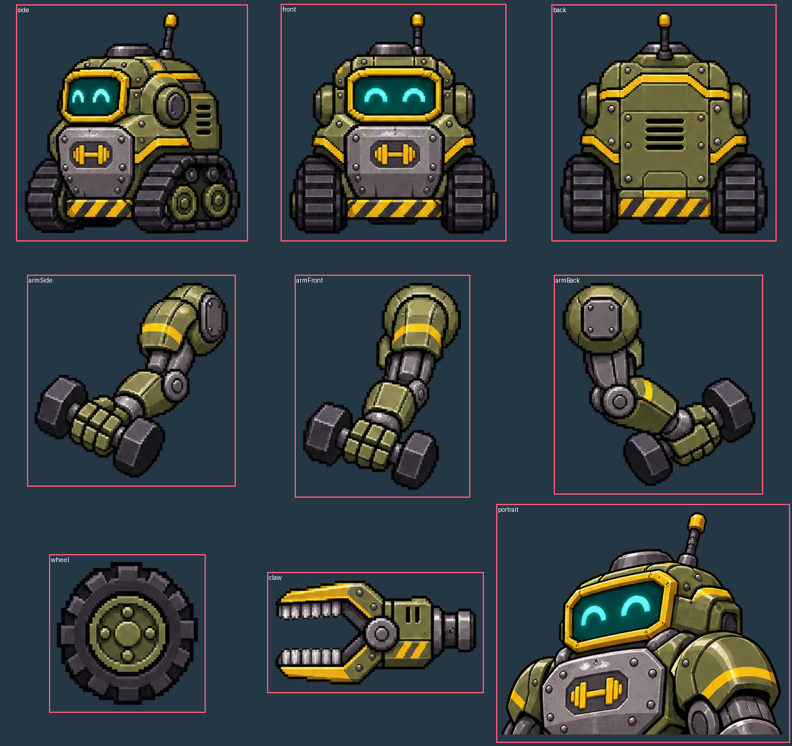

MAX-E-MUM — No Pain, No Subscription
The bodybuilding cleaning robot now runs Iron Circuits beneath Timbuc. Enter through the public lift in the southeast street. Inspect the free emergency stop and local telemetry, then choose whether to invite him. No fee or stat requirement.
Support companion: Spotter Protocol — one ally DEF buff; Active Recovery — timed Nanite Repair; Deload Slam — one physical hit. Existing party members and the castle story retain their roles.
Native battle frame96×96, ground pivot48,94. Walk48×48, ground24,46. Chassis and arms use fixed authored scales; joint rotation, turning hubs and moving tread belts provide movement. No whole-body stretching or independent frame fitting.
In-game recruitment and battle

The public lift remains available before and after recruitment. The gym operates as self-service when MAX travels.

Every runtime frame
Motion numbers follow native MV order:0 walk,1 wait,2 chant,3 guard,4 damage,5 evade,6 thrust,7 swing,8 missile,9 skill,10 spell,11 item,12 escape,13 victory,14 dying,15 abnormal,16 sleep,17 dead. Each column below shows its three exact frames, top to bottom.

Light background review

Exact production sheets
Battle
Walking

Generated source and crop ownership

Recruitment and ability guide · 67 runtime cells validated · Source crops validated · Native route and save checks · Battle checks